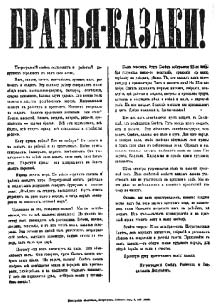
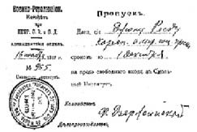

BÖLÜM III

ARİFE


Güçsüz bir hükümetle başkaldırmış bir halk arasındaki ilişkilerde öyle bir zaman gelir ki artık hükümetin herhangi bir hareketi halkı kızdırır, aldığı her tedbir halkın heyecanını arttırır, ne yapsa halka yaranamaz…
Petrograd’ı bırakıp gitme tasarısı fırtına koparmıştı; Kerenski böyle bir karar almış olduğunu inkâr edince halk onu büsbütün alaya aldı.
(Raboçi Put şöyle bağırıyordu) İhtilâlin baskısıyla köşeye sıkışmış olan burjuva “Geçici” Hükümet, Petrograd’ı bırakmayı hiçbir zaman düşünmediğine ve başkenti teslim etmek niyetinde olmadığına dair yalanlar yayarak hareketlerinde serbest kalacağını sanıyor...
Harkof’ta otuz bin maden işçisi örgütlenerek İ.W.W. tüzüğünde bulunan şu maddeyi kabul etmişti: “İşçi sınıfıyla işveren sınıfının hiçbir ortak yanı yoktur.” Kazaklar bu işçileri dağıttılar, kimilerini maden sahipleri işten attı, geri kalanlar da genel grev ilan etti. Ticaret ve Sanayi Bakanı Konovalov, yardımcısı Orlov’a geniş yetki vererek kendisini bu anlaşmazlığı önlemekle görevlendirdi. Madenciler Orlov’u istemediler. Ama Çayika Orlov’un tayinini hem destekledi, hem de Don bölgesinden Kazakların getirtilmesini kabul etmedi...
Bu olayı Kaluga’daki sovyetin dağıtılması izledi. Sovyette çoğunluğu kazanmış olan Bolşevikler kimi siyasi mahpusları serbest bıraktılar. Mahalli Duma Meclisi hükümet komiserinin izniyle Minsk’ten askerî kıtalar getirtti; Sovyet karargâhı top ateşine tutuldu. Bolşevikler teslim oldular, fakat binadan çıkarken Kazaklar üstlerine saldırdı. “Öteki sovyetlere de aynı şeyi yapacağız, Moskova’dakilere de, Petrograd’dakilere de!” Bu olay bütün Rusya’da panikle karışık müthiş bir kızgınlık yarattı...
Petrograd’da Kuzey Sovyetleri Bölgesel Kongresi artık kapanıyordu. Başkan Bolşevik Krilenko’ydu. Kongre ezici bir çoğunlukla iktidarın bütün Rusya’yı temsil edecek olan Sovyetler Kongresi’nce devralınmasını kararlaştırdı. Bölgesel Kongre hapishanelerdeki bütün Bolşeviklere selam gönderdi ve kurtuluşlarının yakın olduğunu haber verdi. Aynı zamanda Rusya çapındaki Fabrika-Atölye Komiteleri Konferansı da (1) sovyetlerden yana olduğunu bildirmiş ve şöyle devam etmişti:
İşçi sınıfı, kendisini politik bakımdan çarlığın elinden kurtardıktan sonra demokratik rejimin üretim alanında da zafere ulaşmasını istiyor. Bu da ancak işçilerin sanayiyi denetlemesiyle olabilir. Bu, hâkim sınıfların izlediği öldürücü politikanın yarattığı ekonomik çözülüş havasının ortaya çıkardığı zorunlu bir durumdur...
Demiryolları Sendikası, Ulaştırma Bakanı Liverovski’nin çekilmesini istiyordu...
Skobeliyev nakaz’ın Müttefikler Konferansı’na götürülmesini Çayika adına istiyor ve Teresçenko’nun Paris’e gönderilmesini usulen protesto ediyordu. Teresçenko istifasını verdi...
Orduda yeniden örgütlemeyi başaramayan General Verkovski kabine toplantılarına çok seyrek katılıyordu...
3 Kasım günü Burtzev’in gazetesi Obşçi Diyelo büyük manşetlerle çıktı:
Vatandaşlar! Anayurdunuzu kurtarın!
Dün Milli Savunma Komisyonu’nun bir toplantısında Kornilov’un düşmesinden sorumlu olan başlıca kişilerden Savaş Bakanı General Verkovski’nin Müttefiklerden bağımsız, ayrı bir barış antlaşması imzalanmasını teklif ettiğini öğrenmiş bulunuyorum.
Bu, Rusya’ya ihanettir!
Teresçenko Geçici Hükümet’in Verkovski önergesini daha incelemediğini söyledi.
“Kendimizi bir tımarhanede sayabiliriz,” diyor Teresçenko.
Komisyon üyeleri General’in sözlerine şaştılar.
General Alekseyev ağladı.
Hayır! Delilik değil bu! Daha ötesi. Düpedüz Rusya’ya ihanet!
Kerenski, Teresçenko ve Nekrassov hemen bize Verkovski’nin sözlerini açıklamalıdırlar.
Vatandaşlar, kalkın!
Rusya satılıyor!
Onu kurtarın!
Verkovski’nin gerçekten söylemek istediği şeyse Rus ordusunun artık dövüşemeyeceğini öne sürerek Müttefikleri barışa zorlamaktı...
Gerek Rusya’da ve gerekse dışarıda heyecan son derecede artmıştı. Verkovski’ye “sağlık durumu dolayısıyla süresiz izin” verildi ve General kabineden ayrıldı. Obşçi Diyelo kapatıldı...
4 Kasım Pazar günü, Petrograd Sovyeti’nin günü olarak tespit edilmişti. Görünüşte amaç, örgüt ve yayın için para toplamaktı. Şehrin her yanında mitingler düzenlenmişti. Gerçekte ise bu bir gövde gösterisiydi. Birdenbire aynı günde Kazakların da 1612 yılının İkon’u şerefine bir Krestni Hod (Haçlı Yürüyüş) yapacakları söylendi. Bu İkon’un mucizesiyle Napolyon’un bile Moskova’dan atıldığı söylenirdi. Hava çok elektrikliydi; iç savaş her an patlayabilirdi. Petrograd Sovyeti bir duyuru yayımladı. Duyuru “Kardeşler - Kazaklar!” diye başlıyordu.
Siz Kazaklar bize, işçi ve askerlere karşı kışkırtılıyorsunuz. Bu Habil Kabil planını bizim ortak düşmanlarımız olan sömürücüler, imtiyazlı sınıflar –generaller, bankerler, derebeyler, eski memurlar, çarın eski uşakları– hazırlıyorlar... Bütün dalavereciler, zenginler, prensler, soylular, generaller bizden nefret ediyorlar. Aralarında sizin Kazak generalleriniz de var. Herhangi bir anda Petrograd Sovyeti’ni yok etmeye ve devrimi ezmeye hazırlar...
4 Kasımda birileri, dinsel bir Kazak gösterisi düzenliyor. Herhangi bir kimsenin bu gösteriye katılıp katılmaması kendi bileceği bir iştir. Biz buna karışmayız ve kimseyi de bundan alıkoymayız... Ama Kazaklar, size ihtar ediyoruz! Krestni Hod adı altında Kaledin’leriniz sizi sakın işçilere karşı kışkırtmak istemesinler...

Petrograd Sovyeti’nin Kazaklardan 4 Kasımda yapılması planlanan
Krestni Hod’u iptal etmelerini isteyen duyurusu. “Kardeşler,
Kazaklar” diye başlıyor, “İşçi ve Askerlerin Petrograd Sovyeti
sizin adresinizdir.”
Gösteriden birdenbire vazgeçildi...
Şehrin kışlalarında ve işçi mahallelerinde Bolşevikler boyuna, “İktidar Sovyetlere!” diye bağırıp duruyorlar; ve gerici güçler de halka, Yahudileri, dükkân sahiplerini, sosyalist liderleri öldürme çağrısı yapıyorlar...
Bir yanda kanlı baskı tedbirleri isteyen monarşist basın, öte yanda Lenin’in yükselen sesi: “Devrim!.. Artık bekleyemeyiz!”
Burjuva basını bile tedirgindi(2). Birjevya Viyedomosti (Borsa Gazetesi) Bolşevik propagandasını, “Toplumun en temel prensiplerine –kişisel güvenlik ve özel mülkiyete saygıya– karşı girişilmiş bir saldırı” olarak niteliyordu.
Fakat Bolşeviklerin tutumuna en çok karşı olanlar “ılımlı” sosyalist gazetelerdi (3). Diyelo Naroda Bolşeviklerin, “devrimin en büyük düşmanı” olduğunu ilan etti. Menşevik Diyen, “hükümet hem kendisini hem de bizi korumalıdır,” diyordu. Plehanov’un gazetesi Yedinstvo (Birlik) (4) Petrograd işçilerinin silahlandırılması olayına hükümetin dikkatini çekiyor ve Bolşeviklere karşı şiddetli tedbirler alınmasını istiyordu.
Hükümetin şaşkınlığı sanki gün geçtikçe artıyordu. Belediye işleri bile yürümüyordu. Sabah gazetelerinin sütunları korkunç hırsızlık ve cinayet olaylarıyla doluydu ve katiller kovuşturulamıyordu.
Bir yandan da silahlı işçiler sokaklarda devriye geziyor, saldırganlarla savaşıyor ve silahları topluyorlardı.
1 Kasımda Petrograd Askerî Komutanı Albay Polkovnikov bir açıklama yayımladı:
Ülkenin geçirmekte olduğu zor günlere rağmen Petrograd çevrelerinde silahlı gösteriler ve kıyımlar yapılması için sorumsuz çağrılarda bulunulmakta ve hırsızlık ve düzensizlik olayları günden güne artmaktadır.
Bu durum vatandaşları rahatsız etmekte, hükümetin ve belediyenin sistemli çalışmasını bozmaktadır.
Ülkeme karşı sorumluluğumu ve görevimi bilerek şunları emrediyorum:
1. Her askerî birlik, özel yönetmeliklerine uyarak, bulunduğu garnizon çevresindeki hükümet kurumlarının korunması için belediye kuvvetlerine, komiserlere, milis kuvvetlerine her türlü yardımı yapacaktır.
2. Mahalli Komutan ve Şehir Milisi’nin temsilcileri ile işbirliği yapılarak karakollar düzenlenecek, katilleri ve asker kaçaklarını yakalamak için gereken tedbirler alınacaktır.
3. Kışlalara giren ve askerleri silahlı gösterilere ve kıyımlara kışkırtan bütün şahıslar yakalanacak ve şehrin ikinci komutanının karargâhına teslim edilecektir.
4. Herhangi bir silahlı gösteri ya da ayaklanma elde bulunan bütün silahlı kuvvetlerle, daha başlangıçta bastırılacaktır.
5. Komiserlerin arama kâğıdı olmadan evleri aramalarına ve tutuklamalarına karşı konulması halinde komiserlere yardım edilecektir.
6. Petrograd askerî bölgesi içinde geçen bütün olaylar hemen rapor edilecektir.
Bütün ordu komitelerini ve örgütlerini komutanlarının görevlerini yapmasına yardımcı olmaya çağırıyorum...
Kerenski, Cumhuriyet Konseyi’nde, hükümetin Bolşeviklerin hazırlıklarını çok iyi bildiğini, herhangi bir gösteriyi önleyecek güçte olduğunu söyledi. Hem Novaya Rus ve hem de Raboçi Put gazetelerini aynı zararlı işi yapmakla suçladı. “Ama basın özgürlüğü olduğundan hükümet basındaki yalanlarla savaşacak durumda değildir...”3 Bunların aynı propagandanın iki ayrı yüzü olduğunu, geçici güçlerin şiddetle arzuladığı karşıdevrimin işine yaradığını söyledi ve sözlerine şöyle devam etti:
“Ben zaten talihsiz bir adamım. Bana ne olursa olsun, ziyanı yok. Ama sorunun asıl önemli yanı, Bolşeviklerin şehirde yarattıkları havanın inanılmaz derecede yüksek bir kışkırtma havası olduğudur. Bunu söyleyecek kadar cesaretim var!”
2 Kasımda Sovyetler Kongresi için yalnızca on beş delege gelmişti. Ertesi gün yüz, daha ertesi günün sabahı yüz yetmiş beş delege geldi. Bu son gelenlerden yüz üçü Bolşevikti… Toplantı için dört yüz delege gerekti ve kongre bu yüzden yalnızca üç gün geri kaldı…
Zamanımın çoğunu Smolni’de geçiriyordum. İçeri girmek eskisi kadar kolay değildi. Dış kapıda iki sıra nöbetçi vardı. İç kapının önünde içeri girmek için sıra bekleyen uzun bir kuyruk. Herkes dörder dörder içeri alınıyor, kimliği ve yaptığı iş soruluyor. İzin kâğıtları veriliyor ve izin kâğıdı verilme sistemi iki saatte bir değiştiriliyor; çünkü içeri durmadan casuslar sızıyor…
Bir gün dış kapıya geldiğimde Troçki ile karısının önümde durduğunu gördüm. Bir asker onları durdurmuştu. Troçki ceplerini araştırdı, ama izin kâğıdını bulamadı.
“Aldırma,” dedi sonunda. “Beni tanıyorsun. Adım Troçki.”
“İzin kâğıdın yok,” diye asker sertçe cevap verdi. “İçeri giremezsin. Senin adın bana bir şey demez.”
“Ama ben Petrograd Sovyeti’nin başkanıyım.”
“Peki,” diye cevap verdi asker, “eğer o kadar önemli bir adam olsaydın hiç değilse küçücük bir kâğıdın olurdu.”
Troçki çok sabırlıydı. “Bırak da komutanı göreyim,” dedi. Asker duraksadı, her gelen insan için komutanı rahatsız etmenin doğru olmadığını anlatan birkaç söz mırıldandı. Sonunda komutana işaret etti. Troçki durumu komutana anlattı. “Benim adım Troçki,” diye tekrarladı.
“Troçki mi?” Asker başını kaşıdı. “Böyle bir ad işittim,” dedi sonunda. “Tamamdır herhalde. İçeri girebilirsiniz. Yoldaş…”
Koridorda Bolşevik Merkez Komitesi üyelerinden Karahan’a rastladım. Yeni hükümetin nasıl olacağını anlattı bana.
“Gevşek bir örgüt. Sovyetlerin istediği biçimde, halkın isteklerine karşı saygılı, mahalli kuvvetlere özgürlük tanıyan bir örgüt. Bugün Geçici Hükümet de tıpkı çarlık hükümeti gibi mahalli demokratik isteklerin ifade edilmesini ve harekete geçmesini önlüyor. Yeni toplum için gereken inisiyatif aşağıdan gelecek… Hükümet Rusya Sosyal Demokrat İşçi Partisi’nin programında çizilmiş olan biçime göre kurulacaktır. Rusya çapındaki Sovyetler Kongresi’nin sık sık toplanmasından sorumlu olan yeni Çayika, parlamentonun kendisi olacaktır; çeşitli bakanlıkların başına, bakan yerine collegia –komiteler– getirilecektir ve bunlar, doğrudan doğruya sovyetlere karşı sorumlu olacaklardır…”
30 Ekimde, randevu alarak, Troçki ile konuşmak üzere Smolni’nin çatı katındaki çıplak, küçük odasına çıktım. Odanın ortasında çıplak bir masa, arkasında basit bir sandalye ve Troçki. Benim birkaç soru sormam gerekiyordu; Troçki hızlı hızlı ve durmadan bir saatten çok konuştu. Konuşmasının özünü, kendi kullandığı kelimelerle olduğu gibi veriyorum:
“Geçici Hükümet büsbütün güçsüz. Denetim burjuvazinin elinde, ama bu denetimi oborontsi partileriyle yapılan hayali bir koalisyon örtüyor. Şimdi, bu devrim boyunca, kendilerine toprak vaat edilen köylülerin artık vaatlerden bıktıklarını ve başkaldırdıklarını görüyoruz. Ülkenin her yanında bütün emekçi yığınlarında aynı kızgınlık var… Kornilov yöntemi burjuvazinin deneyebileceği tek yol. Ama burjuvazinin elinde olmayan şey de kuvvet… Ordu bizimle birlik. Uzlaşma yanlıları ile pasifistler, Sosyalist Devrimciler, Menşevikler bütün otoritelerini yitirdiler… Çünkü köylülerle derebeyler, işçilerle işverenler, askerlerle subaylar arasındaki savaş acı ve daha uzlaşmaz bir duruma geldi. Yalnız halk yığınlarının birlikte yapacakları bir hareket devrimi başarıya götürebilir ve halkı kurtarabilir…
Sovyetler halkın en etkin temsilcileridir… Devrimci tecrübe, fikir ve amaç bakımından da etkindirler. Bir yandan siperlerdeki askerlere, öte yandan fabrikalardaki işçilere ve bir yandan da tarlalardaki köylülere dayandıkları için devrimin belkemiğidirler.
Sovyetlerin dışında bir iktidar yaratılmaya çalışıldı. Ama bu çaba yalnızca iktidarsızlıkla sonuçlandı. Rus Cumhuriyeti Konseyi’nin koridorlarında çeşit çeşit karşıdevrimci planlar hazırlanıyor. Kadet Partisi aktif karşıdevrimi; sovyetler ise halkın davasını temsil etmektedir. Bu iki kamp arasında kalan gruplar ciddi bir önem taşımıyor… Bu lutte finale’dir (son kapışma). Burjuva karşıdevrim, bütün güçlerini örgütlemiş, bize saldıracağı anı bekliyor. Bizim kararımız kesin olacaktır. Mart ayında pek az başlanılmış ve Kornilov olayında biraz ilerlemiş olan işi tamamlayacağız...”
Yeni hükümetin dış politikasını da anlatmaya başladı:
“Bizim ilk hareketimiz bütün cephelerde hemen bir ateşkes anlaşması yapmak ve bütün halkları demokratik barış şartlarını tartışmak üzere bir konferansa çağırmak olacaktır. Barış antlaşmasıyla sağlayacağımız demokrasi, Avrupa’dan alacağımız devrimci cevaba bağlı. Eğer biz burada bir sovyet hükümeti yaratırsak, bu Avrupa’da hemen barışı getirecek olan güçlü bir etken olacak; çünkü yeni hükümet, aradaki hükümetleri atlayarak bütün halkları doğrudan doğruya ateşkes anlaşmasına çağıracaktır. Barış anlaşması sırasında Rus devrimi ‘ilhaksız, tazminatsız, her ulusun kendi kaderini kendisinin tâyin ettiği’ bir barış ve Avrupa Federatif Cumhuriyetinin kurulması için baskı yapacaktır...
“Bu savaşın sonunda yeniden yaratılmış bir Avrupa görüyorum; ama diplomatlar tarafından değil, işçiler tarafından kurulan. Avrupa Federatif Cumhuriyeti –Avrupa Birleşik Devletleri– olmalı bu. Ulusal özerklik artık yeterli değil. Ekonomik gelişim ulusal sınırların kaldırılmasını talep ediyor. Eğer Avrupa yeniden ulusal gruplara parçalanacak olursa, o zaman emperyalizm yeniden başlayacaktır. Yalnız Avrupa Federatif Cumhuriyeti dünyaya barış getirebilir.” Gülümsedi. Bilinen, güzel, hafif alaycı gülümseyişi. “Ama Avrupa halk yığınlarının hareketi olmadan, bu amaçlar gerçekleşemez – şimdilik...”
Herkes Bolşeviklerin bir sabah caddelere çıkıp bütün efendi insanları öldüreceklerini sanırken gerçek ihtilal kendi yolunu doğal ve açık olarak buluyordu.
Geçici Hükümet Petrograd garnizonunu cepheye göndermeyi düşünüyordu.
Petrograd garnizonunda yaklaşık olarak altmış bin asker vardı, Bunlar devrimde önemli rol oynamış askerlerdi. Mart ayındaki büyük günlerde devrimin alın yazısını çizen, asker delegeleri sovyetlerini yaratan ve Kornilov’u Petrograd kapılarından çeviren bu askerlerdi.
Şimdi çoğu Bolşevik olmuştu. Geçici Hükümet şehrin boşaltılmasından söz ettiği sırada buna cevap veren Petrograd garnizonu oldu: “Eğer başkenti savunamayacaksanız barış yapınız; barış yapamıyorsanız çekilin ve yerlerinizi her ikisini de yapacak olan halk hükümetine bırakın.”
Herhangi bir ayaklanma hareketinin Petrograd garnizonunun tutumuna bağlı olduğu belliydi. Hükümet, garnizondaki kıtaların yerine “güvenilir” askerler getirmek istiyordu. Bunlar Kazaklar ve Ölüm Taburları olacaktı. Ordu komiteleri, “ılımlı” sosyalistler ve Çayika, hükümeti destekledi. Cephede ve Petrograd’da geniş çaplı bir ajitasyon başlatıldı; sekiz aydan beri Petrograd garnizonu askerleri başkent kışlalarında yan gelmiş yatıyorlardı. Oysa öteki silah arkadaşları siperlerde açlıktan ölüyorlardı.
Garnizondaki kıtaların oldukça rahat durumlarını bırakıp kış ortası savaş zorluklarının içine atılmak istemedikleri bir bakıma doğruydu. Ama gitmeyi reddetmelerinin başka sebepleri de vardı. Petrograd Sovyeti, hükümetin niyetinden kuşkulanıyordu; bir yandan da neferlerin seçtiği yüzlerce delege cepheden gelip şöyle haykırıyordu: “Takviyeye ihtiyacımız olduğu doğru ama ondan da önemlisi, Petrograd’ın ve devrimin gereğince korunmakta olduğunu biliyor olmamız... Siz cephe gerisini tutun yoldaşlar, cepheyi bize bırakın.”
25 Ekim günü, kapalı kapılar ardında, Petrograd Sovyeti Merkez Komitesi, meseleyi baştan sona kararlaştırmak için özel bir askerî komite kurulmasını görüştü. Ertesi gün Petrograd Sovyeti’nin Askerî Bölümü bir komite seçti; komite hemen burjuva gazetelerine karşı boykot ilân etti ve Çayika’yı Sovyetler Kongresi’ne karşı gelmekle suçladı. Ayın 29’unda, Petrograd Sovyeti’nin açık bir oturumunda Troçki, sovyetin resmen Askerî Devrimci Komite’yi desteklemesini teklif etti. “Kendi savaş örgütlerimizi yaratmalı ve gerekirse ölmeliyiz...” dedi. Cepheye iki heyet gönderilmesine karar verildi; bu heyetlerden biri sovyetlerden, öteki garnizondan olacaktı. Heyetler asker komiteleri ve Genelkurmay’la konuşacaktı.
Pskov’da Sovyet delegelerini Kuzey Cephesi Komutanı General Çeremissov karşıladı. Petrograd garnizonunun cepheye gelmesini emrettiğini ve bundan başka yapılacak bir şey olmadığını kendilerine söyledi. Garnizon komitesinin Petrograd’dan çıkmasına izin verilmedi...
Petrograd Sovyeti’nin askerî bölümünden bir heyet, temsilcilerinden birinin Petrograd bölgesi kurmayına kabul edilmesini istedi. Bu istek reddedildi. Petrograd Sovyeti, askerî bölümünün izni olmadan hiçbir emir çıkarılmamasını istedi. Bu istek de reddedildi. Delegelere yalnız kabaca, “Biz sadece Çayika’yı tanıyoruz. Sizi tanımıyoruz. Eğer kanunları çiğneyecek olursanız sizi tutuklarız,” denildi.
Ayın otuzunda Petrograd’daki bütün alayların temsilcilerinin katıldığı bir toplantıda şu karar alındı: “Petrograd garnizonu artık Geçici Hükümet’i tanımamaktadır. Bizim hükümetimiz Petrograd Sovyeti’dir. Askerî Devrimci Komite aracılığıyla, Petrograd Sovyeti’nden gelen emirlerden başkasına itaat etmeyeceğiz.” Mahalli askerî birliklere Petrograd Sovyeti askerî bölümünün vereceği talimatı beklemeleri bildirildi. Ertesi gün Çayika kendi toplantısını yaptı. Toplantıda çoklukla subaylar vardı. Genelkurmay’la işbirliği yapmak üzere bir komite kuruldu, şehrin bütün mahallelerine komiserler gönderildi.
Ayın 3’ünde Smolni’de yapılan büyük bir askerî toplantıda şu karara varıldı:
Askerî Devrimci Komite’nin kurulmasını selamlayan Petrograd garnizonu, komitenin cephe ile cephe gerisinin devrim çıkarına daha sıkı olarak birleştirilmesi için girişeceği bütün hareketleri bütünüyle desteklemeye söz verir.
Bundan başka garnizon, devrimci proletarya ile birlikte Petrograd’da devrimci düzeni korumayı temin eder. Kornilovcular ya da burjuvazinin yapacağı herhangi bir kışkırtıcı teşebbüs merhametsiz bir direnişle karşılanacaktır.
Gücünün bilincine şimdi varan Askerî Devrimci Komite denetimin derhal kendisine bırakılmasını Petrograd Kurmayından istedi. Hiçbir basımevinin, komitenin izni olmadan, hiçbir çağrı ya da bildiri basmaması emrini verdi. Silahlı komiserler Kronversk bölgesini gezdiler ve geniş çapta silah ve cephane ele geçirdiler. Kaledin’in karargâhı olan Novoçerkask’a gönderilecek on bin süngünün sevkini durdurdular...
Birdenbire tehlikeyi anlayan hükümet, komite dağıldığı takdirde kendilerine dokunulmayacağını söyledi. Ama çok geç kalmıştı. 5 Kasım gece yarısı, Petrograd Sovyeti’nin Genelkurmay’da temsil edilmesini Malevski’ye, Kerenski’nin bizzat kendisi önerdi. Askerî Devrimci Komite bu öneriyi kabul etti. Bir saat sonra Savaş Bakanı General Manikovski önerinin geri çekildiğini açıkladı...
6 Kasım Çarşamba sabahı şehirde, “İşçi ve Asker Delegeleri Sovyetine bağlı Askerî Devrimci Komite” imzasını taşıyan afişler ortaya çıkınca herkesi bir heyecan sardı:
Petrograd Halkına. Yurttaşlar!
Karşıdevrim kanlı kafasını kaldırmış bulunuyor. Kornilovcular, Rusya Sovyetler Kongresi’ni ezmek ve Kurucu Meclis’i önlemek amacıyla, güçlerini seferber etmekteler. Bu arada, kıyımcılar kargaşalık çıkarmak ve kan akıtmak için Petrograd halkına çağrıda bulunabilirler, Petrograd İşçi ve Asker Delegeleri Sovyeti, karşıdevrim ve kıyım teşebbüslerine karşıdevrimci düzeni korumak görevini üzerine almıştır.
Petrograd garnizonu herhangi bir şiddet ya da düzensizlik hareketine izin vermeyecektir. Halkı, serseri ve gerici kışkırtıcıları yakalamaya ve bunları en yakın kışladaki sovyet komiserine teslim etmeye çağırırız. Gerici güçlerin Petrograd caddelerinde yağmacılık olsun, kavga olsun, herhangi bir karışıklık çıkarmaya girişmeleri halinde vücutları hemen ortadan kaldırılacaktır!
Yurttaşlar! Sizlerden tam bir sükûnet ve güven içinde yaşamanızı istiyoruz. Düzen ve devrim davası güçlü ellerdedir.
Askerî Devrimci Komite komiserlerinin bulundukları alayların listesi...
Ayın 3’ünde Bolşevik Partisi liderleri kapalı kapılar ardında yeni bir toplantı yapmışlardı. Zalkind’in uyarısına boyun eğerek kapının dışında bekledim; Volodarski dışarı çıktığı zaman olup bitenleri bana anlattı:
Lenin demiş ki: “6 Kasım çok erken. Ayaklanmak için bütün Rusya’nın desteği gerek; 6 Kasımda kongre delegeleri daha gelmemiş olacak... Öte yandan 8 Kasım da çok geç. Bu sırada kongre örgütlenmiş olur; bu örgütlenmiş büyük kuruluştan hızlı, kesin kararlar çıkarmak güçtür. Kongrenin toplanacağı gün olan 7 Kasımda harekete geçmeli ve kongreye ‘İşte iktidar! Buyurun, ne yapacaksanız yapın!’ diyebilmeliyiz.”
Yukarı katlardaki odaların birinde, bir zamanlar çar ordularında subayken sonradan devrimci olmuş ve bu yüzden sürgüne gönderilmiş, Antonov diye bilinen, zayıf, uzun saçlı Avsonko adındaki matematikçi ve satranç oyuncusu, başkentin nasıl alınacağı üzerine ince planlarla uğraşıyor...
Hükümet de kendi bakımından hazırlanıyor. Bağlılıklarından kuşkulanılmayan, ayrı ayrı tümenlere dağılmış alayların Petrograd’a gelmeleri emredilmişti. Kışlık Saray’a yunker topçuları yerleştirilmişti. Temmuz günlerinden beri ilk olarak caddelerde Kazak devriyeleri görüldü. Polkovnikov emir üstüne emir çıkarıyor, bütün itaatsizlik hareketlerini “azami enerji” ile bastıracağını söylüyordu. Kabinenin en sevilmeyen üyesi Eğitim Bakanı Kişkin, Petrograd’da düzeni korumakla görevli özel komiser olarak atanmıştı; yanına kendisi kadar sevilmeyen iki kişiyi yardımcı olarak aldı: Rutenburg ve Palçinski. Petrograd’da, Kronştad ve Finlandiya’da sıkıyönetim ilan edildi. Bu karar üzerine burjuva gazetesi Novaya Vremya (Yeni Zamanlar) alay ederek şunları yazdı:
Neden sıkıyönetim ilan edildi? Hükümet artık bir iktidar değil de ondan. Hükümetin hiçbir moral otoritesi yok ve iktidarını kullanmak için gereken araçlardan yoksun. Gücü yetse yetse, onunla konuşmaya razı olanlarla müzakereye yeter. Otoritesi bundan ileri gidemez...
Ayın 5’inde, Pazartesi günü, Rusya Cumhuriyeti Konseyi’nde olup bitenleri görmek için Marinski Sarayı’na damladım, Teresçenko’nun dış politikası üzerine acı tartışmalar yapılıyordu. Burtzev-Verkovski olayının yankıları. Bütün diplomatlar orada. Yalnız İtalyan Elçisi yok. Elçinin Carso felaketinde öldüğü söyleniyor…
İçeri girdiğimde Sol Sosyalist Devrimcilerden Karelin Londra’da çıkan Times gazetesinin bir yazısını yüksek sesle okuyordu. Yazıda şöyle deniyordu: “Bolşevizmin çaresi kurşundur!” Kadetlere dönerek bağırdı: “Siz de öyle düşünüyorsunuz, değil mi?”
Sağdan sesler: “Evet! Evet!”
Karelin hiddetle, “Evet, biliyorum, siz de öyle düşünüyorsunuz,” diye cevap verdi. “Ama bunu yapacak cesaret yok sizde!”
Bunun üzerine yumuşak kumral sakalı, sarı saçlarıyla bir tiyatro kahramanına benzeyen Skobeliyev, daha çok özür diler gibi, sovyet nakaz’ını savundu. Son sıralardan kopan “İstifa! İstifa!” bağırışları arasında Teresçenko kürsüye geldi. Paris’e gidecek hükümet ve Çayika delegelerinin ortak bir görüşü bulunmasında direndi. Bu görüş kendi görüşü olmalıydı. Orduda disiplinin yeniden kurulması, savaşın zaferle sonuçlanması üzerine birkaç söz daha... Gürültü, patırtı ve solun sert eleştirilerinden sonra Cumhuriyet Konseyi her günkü gündemine geçti.
Bolşeviklerin sandalyeleri orada, konseyi bıraktıkları günden beri boş duruyor; konseyin canını alıp götürmüşler gibi. Merdivenlerden inerken sert tartışmalara rağmen hiçbir gerçek sesin dışarıdan bu yüksek ve soğuk salona giremeyeceğini, bu yüzden Geçici Hükümet’in de eski Milyukov hükümetinin çarptığı aynı kayalara çarptığını düşünüyordum... Vestiyer, paltomu tutarken şöyle mırıldanıyordu: “Zavallı Rusya’ya ne oldu bilmiyorum, Menşevikler, Bolşevikler, Trudovikler... İşte Ukrayna, işte Finlandiya, işte Alman emperyalistleri ve işte İngiliz emperyalistleri... Ben kırk beş yaşındayım ve bütün ömrümce buradaki kadar çok laf edildiğini hiçbir yerde görmedim...”
Koridorda Profesör Şatski’ye rastladım. Temiz bir frak giymiş, esmer yüzlü bir adam. Kadet Partisi’nin toplantılarında çok etkili. Herkesin dilinde olan Bolşevik kalkışması üzerine ne düşündüğünü sordum. Gülümseyerek omuzlarını silkti.
“Davar onlar… canaille!” diye cevap verdi. “Cesaret edemeyecekler. Eğer cesaret edecek olurlarsa ortadan silinirler. Bir bakıma da iyi olur. Çünkü böylelikle kendi kendilerini yok etmiş olurlar ve Kurucu Meclis’te de bir kuvvetleri olmaz...
“Fakat, dostum, Kurucu Meclis’e sunacağım hükümet biçimi üzerindeki planımın ana çizgisini, izin verirseniz, size anlatayım. Bu konseyin, Geçici Hükümet’le birlikte çalışarak kurucu bir proje hazırlamak üzere seçtiği komisyonun başkanıyım... Amerika’da olduğu gibi bizde de iki yasama meclisi olacak. Alt mecliste mahalli temsilciler bulunacak; yukarı mecliste serbest meslek sahipleri, zemstvo’lar, kooperatifler olacak... Sendikalar da...”
Dışarıda, batıdan sert ve nemli bir rüzgâr esiyor. Soğuk çamur ayakkabımın içine kadar işlemiş. İki yunker bölüğü kollarını sallaya sallaya Morskaya’ya doğru yürüyor. Uzun kaputlarının altından çıkan ayaklarını yerlere sert sert vuruyorlar; çarlık zamanından kalma eski bir asker türküsü tutturmuşlar... İlk köşe başında Şehir Milisinin silahlandırılmış olduğunu, ellerinde yeni tabancalar bulunduğunu gördüm; küçük bir grup durmuş onlara bakıyor. Nevski’nin köşesinde Lenin tarafından yazılmış bir broşür satın aldım: “Bolşevikler İktidarda Kalabilecekler mi?” Bozukluk yerine kullanılan pullardan verdim. Her zamanki tramvaylar geçiyor, yurttaşlar ve askerler asılmışlar üzerine, salkım salkım... Yol boyunca, üzerlerinde asker elbiseleri birtakım erler, sigara ve ayçekirdeği satıyorlar...
Çiğ bir alaca karanlık. Nevski’ye doğru öbek öbek insanlar gazete almak için birbirleriyle itişip kakışıyorlar; nerede bir düz yer bulunursa oraya yapıştırılmış çeşit çeşit çağrıların (5) ve bildirilerin içinden çıkmaya çalışıyorlar: Çayika’nın, köylü sovyetlerinin, “ılımlı” sosyalist partilerin, ordu komitelerinin çıkarttığı, korkutan, küfreden, işçilerin ve askerlerin dışarı çıkmamalarını, hükümeti desteklemelerini isteyen bir sürü çağrı ve bildiri...
Zırhlı bir otomobil, canavar düdüğünü öttürerek aşağı yukarı yavaşça gidip geliyor. Her köşebaşında, her boş arsada, sımsıkı birikmiş gruplar; öğrenciler ve askerler aralarında tartışıyorlar. Karanlık birdenbire çöküyor. Seyrek sokak lambaları yanıyor, insan selleri durmadan gidip geliyor... Petrograd’da, her karışıklıktan önce, her zaman böyle olur...
Şehir gergin. Herhangi bir keskin sese karşı uyanık. Ama Bolşeviklerden daha ses yok; askerler kışlalarında, işçiler de fabrikalarda... Kazan Katedrali’nin yakınlarındaki bir sinemaya gittik. Kötü bir İtalyan aşk ve entrika filmi. Sinemanın önünde birtakım bahriyeliler ve askerler. Çocuklar gibi şaşkın şaşkın bakıyorlar perdeye. Neden bu kadar hızlı hareketler yapıldığını, neden bu kadar çok insanın canına kıyıldığını anlamıyorlar...
Oradan çıkınca hemen Smolni’ye gittim. Üst kattaki 10 numaralı odada Askerî Devrimci Komite devamlı toplantı halindeydi. Toplantıya on sekiz yaşında, seyrek saçlı, Lazimir adında bir delikanlı başkanlık ediyordu. Yanından geçerken durdu ve oldukça çekingen bir şekilde elimi sıktı. Sevinçle gülerek, “Peter-Paul kalesi de şimdi bize katıldı,” dedi. “Hükümetin Petrograd’a gelmesini emrettiği bir alaydan bir dakika önce haber aldık. Askerler durumdan kuşkulanmışlar, Gaçina’da treni durdurmuşlar ve bize bir heyet göndermişler. ‘Ne oluyor?’ diye bize sordular. ‘Söyleyecekleri bir şey var mı? Biz kararımızı verdik: İktidar Sovyetlere...!’ Askerî Devrimci Komite askerlere şu sözleri bildirmelerini istedi : ‘Kardeşler! Devrim adına sizi selamlarız. Yeni bir emre kadar bulunduğunuz yerde, kalın!’”
Bütün telefonların kesik olduğunu, ancak fabrika ve kışlalarla kurulan bir telefonograf sayesinde bağlantı sağlandığını söyledi...
Kuryeler ve komiserler durmadan girip çıkıyorlar. Kapının dışında şehrin en uzak mahallelerine kadar haber ulaştırmaya hazır çok sayıda gönüllü var. Üzerinde teğmen üniforması bulunan çingeneye benzer biri Fransızca olarak bana, “Her şey hazır, bir düğmeye basmak kaldı...” dedi.
Sakallı, zayıf bir sivil geçiyor: Podvoyski, ayaklanma stratejisinden anlayan adam; Antonov, tıraş olmamış, yakası kirli, gözleri uykusuzluktan şiş şiş; Krilenko, kısa boylu, geniş yüzlü, hareketleri sert ve hızlı hızlı konuşan, her zaman gülümseyen bir asker; Dibenko, kocaman sakallı, ciddi bakışlı bir bahriyeli. Günün adamları bunlar... Gelecek günlerin de adamları bunlar olacak...
Aşağıda, fabrika-atölye komiteleri bürosunda Seratov oturmuş hükümet depolarına gönderilecek silah teslimat emirlerini imzalıyor: Her fabrikaya yüz elli tüfek verilecek... Delegeler sıra olmuşlar, bekliyorlar. Kırk kişi kadarlar.
Holde, ikinci derecedeki bazı Bolşevik liderleriyle konuştum. Biri bana tabancasını gösterdi. “Oyun başlıyor,” dedi. Yüzü solgundu. “Biz bir çıkış yapsak da yapmasak da, ötekiler, ya bizi yok edeceklerini ya da kendilerinin yok olacağını biliyorlar...”
Petrograd Sovyeti gece gündüz toplantı halinde. Büyük salona girdiğim zaman Troçki sözlerini bitirmek üzereydi.
“Bir silahlı harekete kalkışmak niyetinde olup olmadığımız soruluyor,” dedi. “Bu soruya açık bir cevap verebilirim: Petrograd Sovyeti sonunda iktidarın sovyetlere geçeceği anın yaklaştığını anlıyor. Bu hükümet dönüşümünü Rusya Sovyetler Kongresi yapacaktır. Silahlı bir gösteri yapılıp yapılmayacağı... Rusya Sovyetler Kongresi’ne el koyacak olanların bileceği iş...
“Geçici Hükümet’in eline teslim edilmiş olan iktidarın zavallı, beceriksiz bir iktidar olduğunu; yerini gerçek bir halk hükümetine bırakmak için tarihin kendisini silip süpüreceği günü beklediğini görüyoruz. Ama, bugün bile, bir çatışmadan kaçınıyoruz. Rusya Kongresi’nin halkın örgütlenmiş özgürlüğüne dayanan iktidarını ve otoritesini eline alacağını umuyoruz. Ama hükümet, yaşayabileceği yirmi dört saatlik, kırk sekiz saatlik ya, da iki saatlik kısa zamanı bize saldırmakla geçirmek istiyorsa, o zaman biz de onların karşısına karşı-saldırı ile çıkacağız; o vurursa biz de vuracağız, demire çelikle karşı koyacağız!”
“Yaşasın” sesleri arasında Troçki Sol Sosyalist Devrimcilerin Askerî Devrimci Komite’ye temsilci göndermeye razı olduklarını bildirdi...
Sabahın saat üçünde Smolni’den çıkarken kapının her iki yanına da iki makineli tüfeğin yerleştirilmiş olduğunu ve kuvvetli nöbetçi müfrezelerinin kapıları ve sokakları gözetlediklerini gördüm. Bill Şatov4 basamakları atlaya atlaya çıktı. “Eh,” diye bağırdı, “tamam! Kerenski yunker’leri gönderdi, Soldat ve Raboçi Put gazetelerini kapattı. Ama bizim askerler geldiler; hükümetin mührünü söküp attılar. Şimdi de burjuva gazete idarehanelerini kapatmak üzere askerleri gönderiyoruz!” Sevinçle omzuma vurdu ve içeri koştu...
Ayın 6’ıncı sabahı Dışişleri Bakanlığı’nda bulunan Sansür Bürosu’nda bir işim vardı, Bütün duvarlarda halkı “sakin” olmaya çağıran isterik çağrılar... Polkovnikov prikaz üzerine prikaz yayımlıyordu:
Bölge askeri kurmayından yeni emirler gelinceye kadar askeri birliklerin kışlalarında kalmalarını emrediyorum... Üstlerinden emir almadan kendi başlarına hareket eden bütün subaylar isyan suçundan askeri mahkemelere verileceklerdir. Askerlerin başka örgütlerden gelecek emirleri yerine getirmelerini kesin olarak yasaklıyorum…
Sabah gazetesi hükümetin Novaya Rus, Zivoye Slove, Raboçi Put ve Soldat gazetelerini kapattığını ve Petrograd Sovyeti liderleriyle Askerî Devrimci Komite önderlerinin tutuklanmasını emrettiğini yazıyordu...
Saray meydanını geçerken birkaç yunker topçu bataryasının Kızıl Kemer’in altından doğru çekildiğini, sarayın önüne yerleştirildiğini gördüm. Genelkurmay’ın büyük kırmızı binasında görülmemiş bir hareket var; kapının önünde birkaç zırhlı otomobil duruyor. İçleri subay dolu otomobiller durmadan gidip geliyorlar... Sansür, sirk oyunları seyreden bir çocuk gibi tedirgin. Kerenski’nin, istifasını vermek üzere şimdi Cumhuriyet Konseyi’ne gittiğini söylediler, Marinski sarayına koştum. Kerenski’nin, daha çok kendini savunduğu ve düşmanlarını acı bir dille suçladığı heyecanlı ve biraz da tutarsız söylevinin sonuna yetiştim.
“Burada size Raboçi Put’da Ulyanov Lenin tarafından yazılmış bir makale serisinden birkaç parça okuyacağım. Ulyanov Lenin bir devlet suçlusudur. Şimdi saklanmaktadır. Biz kendisini bulmaya çalışıyoruz... Bu devlet suçlusu proletaryayı ve Petrograd garnizonunu 16-18 Temmuz deneyini tekrarlamaya çağırıyor ve hemen silahlı bir ayaklanmanın zorunluluğu üzerinde duruyor... Bundan başka, öteki Bolşevik liderler de birçok toplantılara hâkim olmakta ve hemen ihtilal yapılmasından yana çağrılarda bulunmaktadırlar. Özellikle Petrograd Sovyeti’nin bugünkü başkanı olan Bronştayn-Troçki’nin çalışmaları üzerinde dikkatle durulmalıdır...
“Dikkatinize şunu sunmak zorundayım ki... Raboçi Put ve Soldat gazetelerindeki bütün yazıların ifadesi ve biçimi tastamam Novaya Rus’unkine benzemektedir... Şu ya da bu parti hareketi; amacı, bir kısım halkın siyasal cehaleti ve adam öldürme duyusunu sömürerek, bedeli ne olursa olsun, Rusya’yı kışkırtmak olan bir çeşit örgüt, bir yağma ve imha hareketi üzerinde o kadar çok duracak değiliz. Halk yığınlarının bugünkü moral durumunda Petrograd’da başlayacak bir hareketi korkunç kıyımlar izleyecektir; bu da özgür Rusya için ebedi bir leke olarak kalacaktır...
“… Ulyanov Lenin’in bizzat belirttiği gibi, aşırı sol Sosyal Demokratlar Rusya’da çok elverişli duruma girdiler.” (Burada Kerenski Lenin’in yazısından aşağıdaki parçayı okudu):
Bir kere düşünün... Alman yoldaşlarımızın yalnızca bir Liebknecht’i var; gazeteleri yok, toplanma özgürlükleri yok, sovyetleri yok... Toplumun bütün sınıfları onlara karşı inanılmaz bir düşmanlık besliyor. Bütün bunlara rağmen Alman yoldaşlar harekete geçmeye çalışıyorlar; oysa bizim bir sürü gazetemiz var, toplanma özgürlüğümüz var, sovyetlerin çoğu bizden yana. Yine de, bütün dünyadaki proleterler içinde en iyi durumda olan bizler, Alman devrimci örgütlerini desteklemek istemiyoruz...
Sonra Kerenski devam etti:
“Ayaklanmayı örgütleyenler böylelikle, bir yandan, Rusya’da Geçici Hükümet yönetiminde siyasi bir partinin özgür olarak çalışması için en elverişli koşulların bulunduğunu kabul ederken, öte yandan bu hükümetin başında bulunan Başbakan Kerenski’ye bir yağmacı, burjuvaziye satılmış bir adam gözüyle bakıyorlar…
“… İsyanı örgütleyenler Alman proletaryasının yardımına değil, Alman yönetici sınıflarının yardımına koşuyorlar ve Rus sınırlarını Wilhelm ile dostlarının demir yumruklarına açmış oluyorlar. Bu insanların amaçları Geçici Hükümet’i çok az ilgilendirir, bu hareketlere bilinçli ya da bilinçsiz olarak girişmelerine aldırmaz; ama ne olursa olsun, sorumluluğunun bütün bilinciyle, şu kürsüden, bir Rus partisinin bu gibi hareketlerini Rusya’ya yapılan bir ihanet olarak nitelerim!...
Sağın görüşüne katılarak hemen bir soruşturma yapılmasını ve gerekli tutuklamalara başlanmasını teklif ediyorum.” Soldan gürültüler. Kerenski, bütün gücüyle: “Dinleyin beni! Bilinçli ya da bilinçsiz bir ihanet yüzünden içine girmiş olduğumuz bugünkü tehlikeli durumda Geçici Hükümet’le ve başkalarıyla birlikte kendim de, Rusya’nın hayatına, şerefine ve bağımsızlığına ihanet etmektense öldürülmeyi tercih ederim...”
Bu sırada Kerenski’ye bir kâğıt uzatıldı.
“Şimdi onların alaylara dağıtmakta oldukları beyannameyi almış bulunuyorum. Şöyle diyor.” Okur:
Petrograd İşçi ve Asker Sovyeti tehlikededir. Alaylara hemen savaş durumuna geçmelerini ve yeni emirleri beklemelerini emrediyoruz. Bu emrin geciktirilmesi ya da yapılmaması devrime karşı bir ihanet sayılacaktır. Askerî Devrimci Komite. Başkan adına, Podvoyski. Sekreter, Antonov.
“Bu, aslında, basit halkı bugünkü düzene karşı gelmeye zorlamak, Kurucu Meclis’i parçalamak ve cepheyi Wilhelm’in demir yumruğuna açmak için yapılmış bir teşebbüstür…
“ ‘Basit halk’ deyimini bile bile kullandım. Çünkü bilinçli demokrasi ve onun Çayika’sı, bütün ordu örgütleri, özgür Rusya’nın yücelttiği her şey, sağduyu, büyük Rus demokrasisinin şerefi ve vicdanı, bu gibi hareketlere karşıdır...
“Buraya dua ederek gelmedim; şu anda özgürlüğümüzü savunan Geçici Hükümet’i, parlak geleceği olan yeni Rus devletini, doğruyu görme cesaretini göstermemiş olanların dışında herkesin destekleyeceği inancıyla geldim.
“... Geçici Hükümet devletin yurttaşlara tanıdığı siyasi hakları kullanma özgürlüğünü hiçbir zaman bozmamıştır... Ama şimdi Geçici Hükümet... şunu ilan ediyor: Şu anda Rus halkının özgür iradesine karşı başkaldıran, aynı zamanda Almanlara cepheyi açmak isteyen Rus ulusunun bu unsurları, bu gruplar ve partiler kesin olarak ortadan kaldırılmalıdırlar!..
“Petrograd halkı bu adamların karşısında sağlam bir kuvvet bulunduğunu böylece görsün ve belki de son anda sağduyu, vicdan ve şeref, bunlara sahip olan insanların yüreklerinde muzaffer olsun...”
Bütün bu söylev sırasında salonda korkunç bir gürültü vardı. Başbakan solmuş ve ter içinde kalmış yüzüyle kürsüden inip memurların arasından geçerken sol ve merkezden birçok sözcü hiddetle bağırarak sağa saldırdı. Sosyalist Devrimcilerden Gotz bile şunları söyledi:
“Bolşeviklerin politikası halkın hoşnutsuzluğunu sömürme bakımından demagogca ve canice. Ama öte yandan halkın bugüne kadar yerine getirilmemiş birçok isteği olduğunu da unutmayalım. Barış, toprak ve ordunun demokratlaştırılması sorunları o biçimde ele alınmalıdır ki, hiçbir askerin, köylünün ya da işçinin hükümetimizin bu sorunları çözmek için bütün gücüyle ve şaşmadan çalıştığına en ufak bir kuşkusu olmasın...
“Biz Menşevikler bir kabine buhranı yaratmak istemiyoruz. Geçici Hükümet’i bütün enerjimizle, kanımızın son damlasına kadar savunmaya hazırız. Ama Geçici Hükümet de bütün bu hayati sorunlara halkın sabırsızlıkla beklediği açık ve kesin cevapları vermelidir...”
Sonra Martov, kızarak şunları söyledi:
“Başbakan, ‘Basit Halk’ deyimini kullandı. Oysa şu anda sorun –yanlış yola götürülmüş olsalar bile– proletarya ve ordudaki önemli bölümlerin sorunudur. Bu biçim bir konuşma yapmak iç savaşı kışkırtmak demektir.”
Solun teklif ettiği gündem oya konuldu. Bu oylama aşağı yukarı bir güvensizlik oylaması oldu.
1. Bir hükümet darbesini amaçlayan ve son günlerde hazırlanmakta olan silahlı gösteri iç savaşı kışkırtmak ve kıyımlara ve karşıdevrime elverişli koşulları yaratmak, Kara Yüzler gibi devrim düşmanı kuvvetleri seferber etmek tehlikesini gösteriyor. Bu durum ister istemez Kurucu Meclis’in toplanmasını olanaksızlaştıracak, askerî bir felakete, devrimin ölümüne, yurttaki ekonomik hayatın felce uğramasına ve Rusya’nın ortadan kalkmasına yol açacaktır.
2. Acil önlemler alınmasındaki gecikmeler kadar savaş ve genel düzensizliğin de meydana getirdiği nesnel koşullar bu kışkırtmalar için elverişli havayı yaratmış bulunuyor. Her şeyden önce ve derhal toprağı köylü toprak komitelerine intikal ettirmek için bir kararname çıkarmalı ve dışarıda Müttefiklerden barış şartlarını bildirmelerini ve barış görüşmelerine başlamalarını isteyen enerjik bir politika izlenmelidir.
3. Monarşist gösterilerle ve kıyımcı hareketlerle savaşmak için bu hareketleri bastıracak önlemler hemen alınmalı ve bu amaçla Petrograd’da, Geçici Hükümet’le birlikte çalışan belediye ve devrimci demokrasi organlarından oluşan bir Kamu Güvenliği Komitesi kurulmalıdır...
Bütün Menşeviklerin ve Sosyalist Devrimcilerin bu karara katılmış olmaları çok ilginçtir. Kerenski bu kararı görünce durumu anlatmak üzere Avksentiyev’i Kışlık Saray’a çağırdı. Bu karar Geçici Hükümet’e karşı yöneltilmiş bir güvensizlik oyu niteliğinde ise Avksentiyev yeni kabineyi kurabilirdi. Uzlaşıcıların liderleri, Dan, Gotz, ve Avksentiyev son uzlaşmalarını da yaptılar… Bu kararın hükümeti eleştirme anlamına gelmediğini Kerenski’ye söylediler!
Morskaya ile Nevski’nin birleştiği köşede süngü takmış askerler bütün özel otomobilleri durduruyorlar, içlerinde oturanları dışarı çıkardıktan sonra otomobilleri Kışlık Saray’a gönderiyorlardı. Halktan bir sürü insan toplanmış onları seyrediyordu. Askerlerin Geçici Hükümet’e mi yoksa Askerî Devrimci Komite’ye mi bağlı olduklarını kimse bilmiyordu. Kazan Katedrali’nin çevresinde de aynı şeyler oluyor, otomobiller Nevski’ye doğru geri çevriliyordu. Silahlı beş ya da altı bahriyeli sinirli sinirli gülerek geldiler ve askerlerden ikisiyle bir şeyler konuştular. Bahriyelilerin kollarındaki bantların üstünde Avrora ve Zarya Svobodi yazılıydı. Bunlar Baltık donanmasında Bolşeviklerden yana olan iki kruvazörün adıydı. İçlerinden biri “Kronştad geliyor,” dedi. Sanki 1792’de Paris sokaklarındayız ve sanki biri, “Marsilyalılar geliyor,” diyor. Çünkü Kronştad’da Bolşevizme inanmış ve bu yolda ölümü göze almış yirmi beş bin bahriyeli vardı...
Raboçi i Soldat yeni çıkmıştı. Birinci sayfayı boydan boya kaplayan beyanname:
ASKERLER! İŞÇİLER! YURTTAŞLAR!
Halk düşmanları dün gece saldırıya geçtiler. Genelkurmay’daki Kornilovcular çevredeki yunker’leri getirtmeye ve gönüllü taburları kurmaya çalışıyorlar. Oranienbaum yunker’leri ve Çarskoye Selo gönüllüleri emirleri dinlemediler. Petrograd Sovyeti’ne karşı büyük bir ihanet düzenlenmektedir... Karşıdevrimciler Rusya Sovyetler Kongresi’nin arifesinde kongreye karşı, Kurucu Meclis’e karşı, halka karşı bir kampanya açmaya niyetlenmektedir. Petrograd Sovyeti, devrimi korumaktadır. Askerî Devrimci Komite komplocuların saldırılarını püskürtecektir. Bütün Petrograd garnizonu ve proletaryası halk düşmanlarına öldürücü yumruğu vurmaya hazırdır.
Askerî Devrimci Komite şunları emreder:
1. Bütün alay, tümen ve savaş gemileri komiteleri ile sovyet komiserleri ve bütün devrimci örgütler sürekli olarak toplantı durumunda bulunacaklar ve komplocuların planları üzerine bilgiler toplayacaklardır.
2. Hiçbir asker komitenin izni olmadan birliğinden ayrılmayacaktır.
3. Her askerî birlikten iki, her muhafız sovyetinden beş delege derhal Smolni’ye gönderilecektir.
4. Petrograd sovyetlerinin bütün üyeleriyle Rusya Sovyetler Kongresi delegelerinin olağanüstü bir toplantı için hemen Smolni’ye gelmeleri rica olunur.
Karşıdevrim kanlı başını kaldırmış bulunuyor.
Askerlerin ve işçilerin bugüne kadar başardığı bütün işler ve umutları büyük bir tehlike ile karşı karşıyadır.
Ama devrim kuvvetleri düşmanlarınkinden çok fazladır.
Halkın davası kuvvetli ellerdedir. Komplocular ezilecektir.
Ne duraksayın ne de kuşkulanın! Sağlam, disiplinli ve kararlı olun!
Askerî Devrimci Komite
Petrograd Sovyeti Smolni’de sürekli olarak toplanıyordu. Fırtınanın göbeği orası. Delegeler yerlere kıvrılıp yatıyorlar, sonra yine kalkıp tartışmalara katılıyorlar. Troçki, Kamenev, Volodarski günde altı, sekiz, bazen on saat konuşuyorlar.
Birinci katta 18 numaralı odaya indim. Bolşevik delegeler burada toplanmışlar. Kaba bir ses durmadan konuşuyor. Kimin konuştuğu belli değil; kalabalığın içinde kaybolmuş, görülmüyor: “Uzlaşıcılar bizim tecrit edildiğimizi söylüyorlar. Kulak asmayın onlara. Bir kere başlasın, onlar da bize katılırlar, yoksa yandaşlarını kaybederler...”
Bir kâğıt parçası uzattı: “Nitekim onları sürüklüyoruz da! Şimdi Menşeviklerle Sosyalist Devrimcilerden bir mesaj geldi. Hareketimizi iyi karşılamıyorlar ama hükümet bize saldırırsa proletaryanın davasına karşı gelmeyeceklerini söylüyorlar!” Sevinçli bağrışmalar...
Gece, karanlık bastığı zaman, büyük hol askerler ve işçilerle doldu. Boz renkli, büyük bir insan kalabalığı. Mavi dumanlar arasında durmadan konuşuluyor. Eski Çayika bu sefer kongreye gelen yeni delegeleri tanımaya karar vermişti. Kongre Çayika’nın ölümü, belki de kurduğu devrimci düzenin yıkılışı olacaktı. Ama bu toplantıda yalnız Çayika üyeleri oy verebileceklerdi.
Gotz Başkanlığa geçip de Dan konuşmaya başladığında, vakit gece yarısını geçiyordu. Bana oldukça korkutucu gelen derin bir sessizlik vardı ortada.
“Çok korkunç saatler yaşıyoruz,” dedi Dan. “Düşman Petrograd kapılarında. Demokrasi kuvvetleri bu tehlikeye karşı koymak için örgütlenmeye çalışıyor. Oysa biz başkentin caddelerinde ne zaman kan akacağını bekliyoruz, ve kıtlık yalnız bizim türdeş hükümetimizi değil, devrimin kendisini de tehdit ediyor... Halk yığınları bıkkın ve yorgun. Devrimde hiçbir çıkarları yok. Eğer Bolşevikler bir şeye kalkışacak olurlarsa bu devrimin sonu olur...” (Bağırmalar: “Yalan!”) “Karşıdevrimciler başkaldırmak, genel kıyıma başlamak için Bolşevikleri bekliyorlar. Herhangi bir kalkışma (vystuplennie) olursa Kurucu Meclis toplanamaz...” (“Yalan! Utan!” diye bağırmalar.)
“Petrograd garnizonunun, askerî harekât bölgesinde Genelkurmay’ın emrini dinlememesi doğru değil... Genelkurmay’ın ve seçtiğiniz Çayika’nın emirlerini dinlemelisiniz. Bütün iktidarın sovyetlerin eline geçmesi... Bu ölüm demektir. Haydutlar ve hırsızlar yağmaya geçmek için fırsat kolluyorlar... Şu sloganları ortaya atacağınız zamanı bekliyorlar: ‘Evlere girin, burjuvazinin ayakkabılarını ve elbiselerini alın...’” (Gürültüler, bağırmalar: “Böyle bir slogan yok! Yalan! Yalan!”) “Eh, belki başka türlü başlar ama böyle biter!
“Çayika’nın elinde harekete geçmek için yeterince kuvvet var. Onun emirlerine itaat edilmelidir... Biz süngülerden korkmayız... Çayika devrimi bedeniyle savunacaktır...” (Bağırmalar: “Onun bedeni ortadan kalkalı çok oluyor!”)
Büyük ve sürekli gürültüler. Dan masaya vururken sesi artık bir çığlık gibi çıkıyor: “Bu işi kışkırtanlar bir cinayet işlemektedirler!”
Bir ses: “Sen o cinayeti çoktan işledin, iktidarı ele geçirip burjuvaziye verdiğin zaman!”
Başkan Gotz zilini çalıyor: “Susun, yoksa dışarı atarım!”
Ses: “Dene de görelim!” (Bravolar, ıslıklar.)
“Şimdi barış politikamıza gelince,” (gülüşmeler) “ne yazık ki, Rusya artık savaşın devamını destekleyemez. Bir barışa varılacak ama bu sürekli bir barış olmayacak —demokratik bir barış olmayacak... Bugün, Cumhuriyet Konseyi’nde, kan akıtılmasını önlemek üzere günlük bir emir sunduk. Toprağın toprak komitelerine bırakılmasını ve hemen barış görüşmelerine başlanmasını istedik...” (Gülüşmeler ve bağırmalar: “Çok geç!”)
Sonra Bolşevikler adına Troçki bir fırtına gibi coşan alkışlar arasında kürsüye çıktı. Zayıf, sivri yüzü hınzırca bir ifade aldığı zaman sanki bir şeytandı.
“Dan’ın taktikleri doğruluyor ki, halk yığınları –büyük, durgun ve umursamayan yığınlar– kendisiyle birliktir!” (Büyük sevinç gösterileri.) Troçki dramatik bir tavırla Başkana döndü: “Biz toprakların köylüye verilmesini istediğimiz zaman siz buna karşıydınız. Biz de köylülere şunu söyledik: ‘Eğer toprağı size vermiyorlarsa siz kendiniz alın!’ Ve köylüler bizim sözümüzü dinlediler. Ve şimdi siz gelmiş altı ay önce bizim yaptığımız işi savunuyorsunuz...
“Kerenski’nin orduda idam cezalarının ertelenmesi konusunda verdiği emrin, kendi insanî ilkelerinden ileri geldiğini sanmıyorum. Ona itaat etmeyen Petrograd garnizonunun onu bu karara götürdüğünü sanıyorum...
“Bugün Dan, Cumhuriyet Konseyi’nde yaptığı bir konuşma nedeniyle, gizli bir Bolşevik ajanı olmakla suçlanıyor... Dan’ın 16 ve 18 Temmuz ayaklanmasına katıldığını söyleyeceği. günler de, gelecektir... Bugün Dan’ın Cumhuriyet Konseyi’ne sunduğu önergede, orduda disiplinin sağlanmasına hiç değinilmedi; oysa, kendi partisinin propagandasında bu konu üzerinde çok durulmuştu.
Hayır. Son yedi aylık tarih halk yığınlarının Menşeviklerden yüz çevirdiklerini gösteriyor. Menşevikler ve Sosyalist Devrimciler Kadetleri tuttular, ve sonra, iktidara geçince de iktidarı Kadetlere verdiler...”
Sonra, uzun yüzlü, sert konuşan Lieber, homurtular ve gülüşmeler arasında kürsüye çıktı:
“Marx ve Engels proletaryanın, iktidarı almaya hazır olmadığı sürece iktidara geçmeye hakkı olmadığını söylemiştir. Böyle bir burjuva devriminde... halk yığınlarının iktidarı ele alması devrimin kötü bir sonu olur... Sosyal demokrat bir kuramcı olan Troçki’nin kendisi de şimdi savunduğu düşünceye karşıydı...” (Bağırmalar; “Yeter! İndirin şunu aşağıya!”)
Martov sık sık kesilen sözleri arasında şunları söyledi: “Enternasyonalciler iktidarın demokrasiye geçmesine karşı değiller ama Bolşeviklerin yöntemlerini onaylamıyorlar. Bugün iktidara geçecek zaman değildir...”
Dan yeniden kürsüye çıktı, Askerî Devrimci Komite’nin İzvestiya gazetesine bir komiser gönderip gazeteye sansür koymasını protesto etti. Büyük bir gürültü koptu, Martov konuşmaya çalıştı, ama söyledikleri işitilmedi. Ordudan ve Baltık donanmasından gelen delegeler bütün salonda ayağa kalkarak kendi hükümetlerinin Sovyetler olduğunu haykırdılar.
Büyük kargaşalık arasında Ehrlih, işçileri ve askerleri sakin olmaya ve gösteri kışkırtmalarına cevap vermemeye çağıran, toprağın köylülere geçmesine ve barış görüşmelerinin başlamasına karar verecek bir komitenin kurulmasını isteyen bir karar taslağı sundu.

Askerî Devrimci Komite’nin bana verdiği
Smolni Enstitüsü’ne giriş kartı. 16 Kasım 1917, No: 195
Bunun üzerine Volodarski ayağa fırladı ve Çayika’nın, kongre arifesinde, kongrenin yapacağı işleri yapmaya hakkı olmadığını bağırarak söyledi. Çayika pratikte ölmüştür, dedi, bu karar sureti yalnızca yitirilmiş bir gücü desteklemek için yapılan bir düzenbazlıktan başka bir şey değildir...
“Biz, Bolşevikler olarak, bu önergeden yana oy kullanmayacağız!” Bunun üzerine Bolşevikler salondan çıktılar ve önerge kabul edildi.
Sabahın saat dördüne doğru dış salonda Zorin’e rastladım. Omzunda bir tüfek vardı.
Sakin, ama sevinçli, “Harekete geçtik,” dedi. (6) “Adalet Bakanı yardımcısıyla Din İşleri Bakanını yakaladık. Şimdi aşağıda, bodrumda hapisteler. Alayın biri telefon santralini, başkası telgrafhaneyi, bir başkası da Merkez Bankası’nı işgal etmeye gidiyor. Kızıl Muhafızlar ortaya çıktı...”
Smolni’nin basamaklarında, puslu bir karanlık içinde, Kızıl Muhafızları ilk olarak gördük: omuzlarında süngülü tüfekler, işçi elbiseli birtakım delikanlılar, aralarında konuşuyorlar, sinirli sinirli...
Batıda, uzakta, sessiz duran damlardan tek tük silah sesleri geliyor; yunker’ler Neva üzerindeki köprüleri açarak Viborg mahallesindeki fabrika işçileriyle askerlerin şehrin merkezinde bulunan sovyet kuvvetlerine katılmalarını önlemeye çalışıyorlar; Krontştad bahriyelileri de köprüleri yeniden kapıyorlar...
Arkamızda büyük Smolni; pırıl pırıl; dev bir arı kovanı sanki, durmadan çalışıyor.